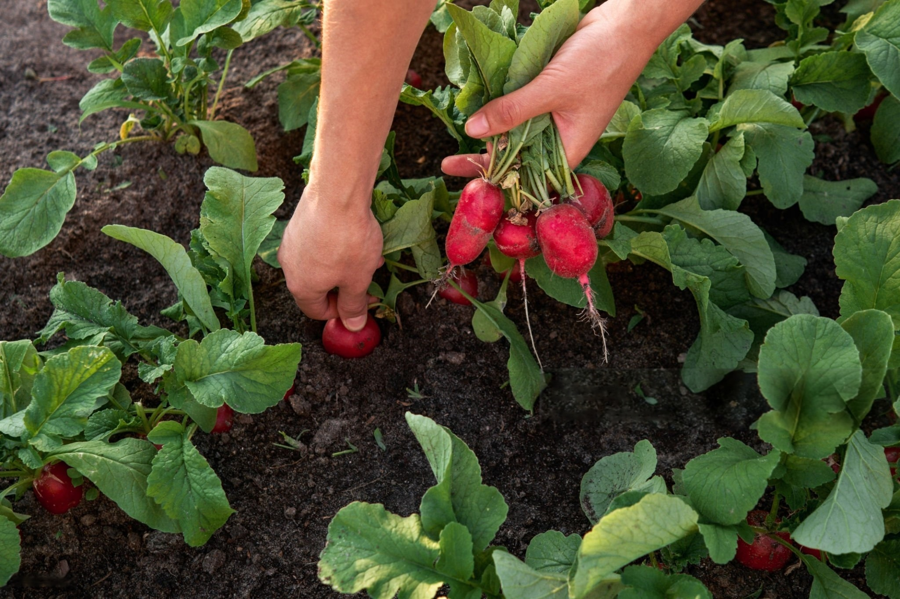
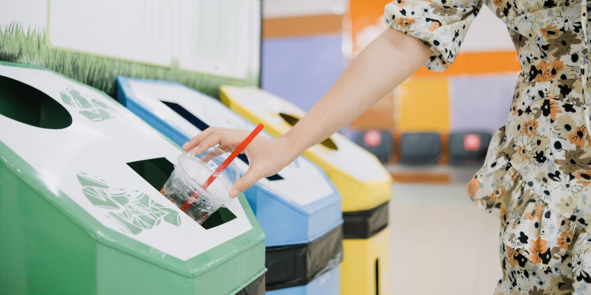
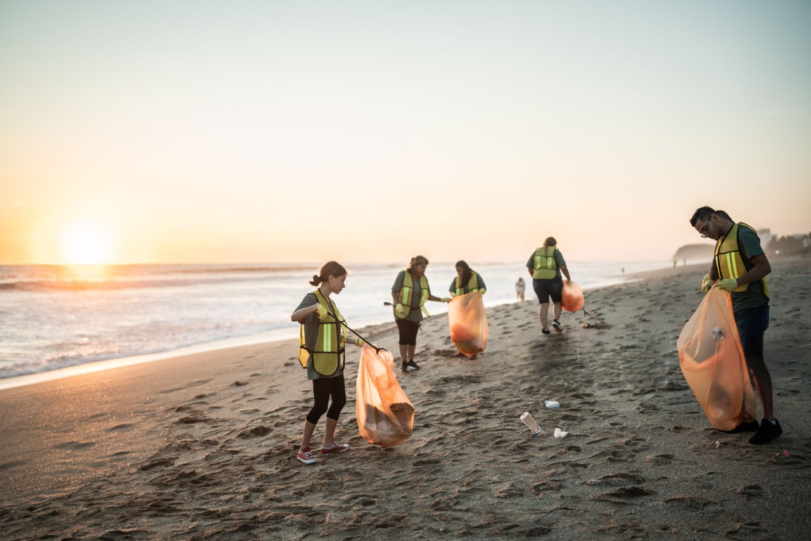

Bienvenido al portal de eventos sostenibles
Encuentra actividades, charlas y talleres enfocados en la protección del medio ambiente y la sostenibilidad
Eventos destacados

Agricultura ecológica
Aprende técnicas sostenibles para mejorar la producción del terreno

Taller de reciclaje
Aprende a gestionar residuos de forma ecológica

Limpieza de playas
Voluntariado para ayudar a mantener las playas limpias